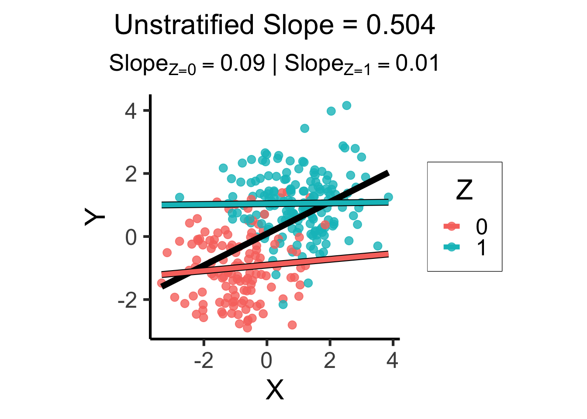
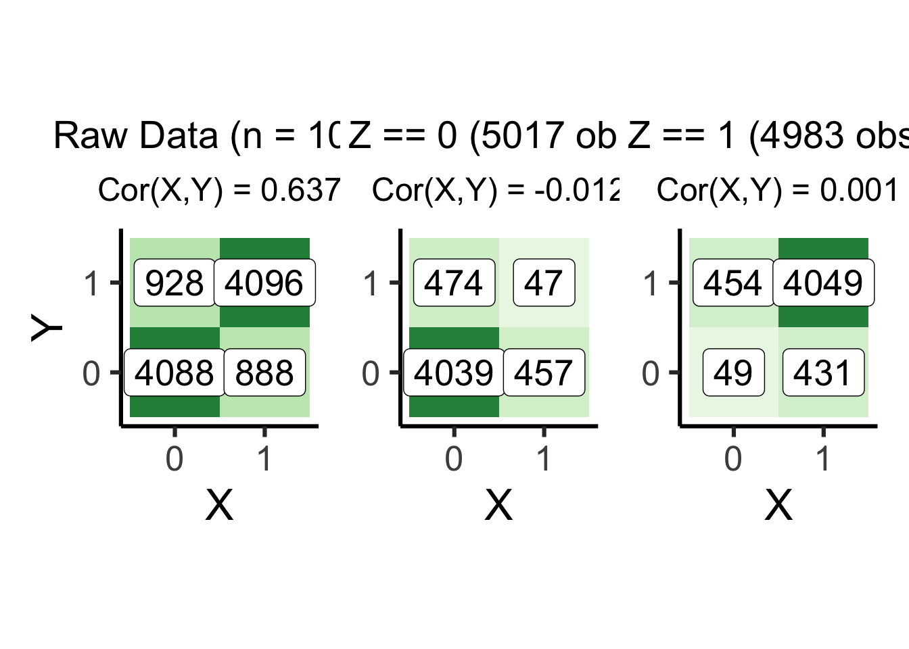
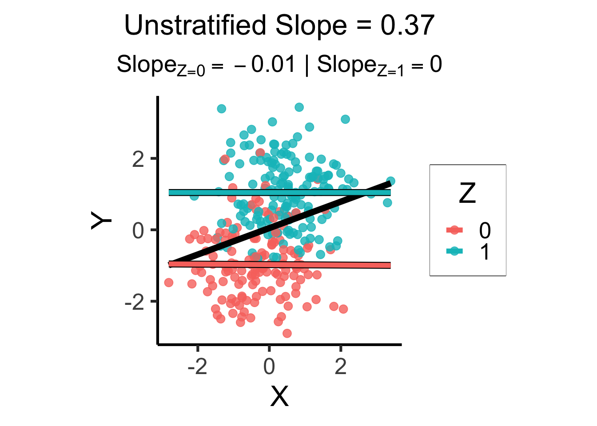
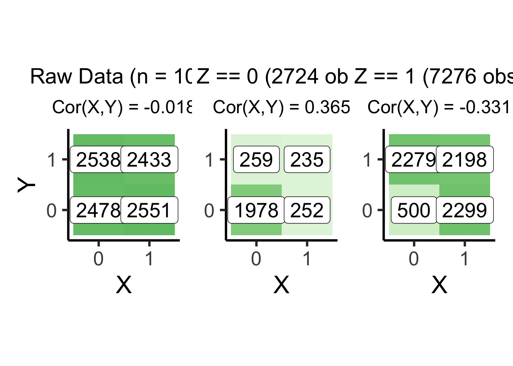
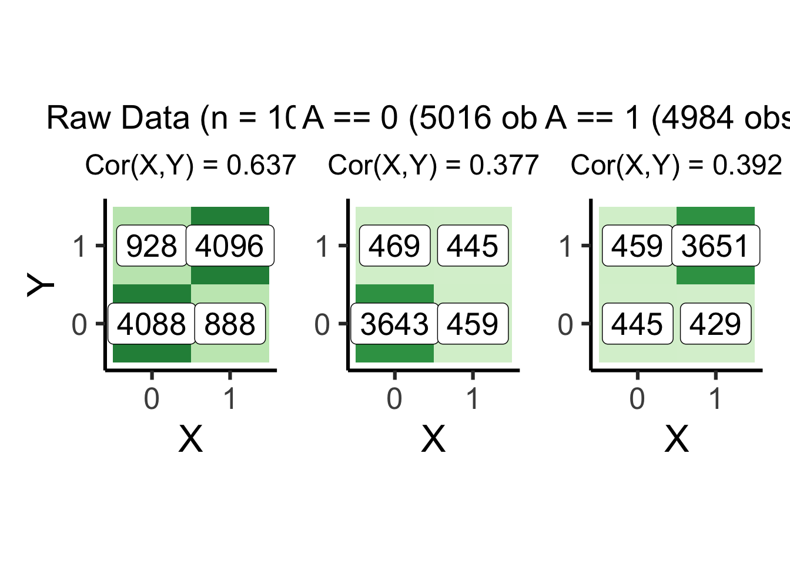

Code
source("../dsan-globals/_globals.r")DSAN 5650: Causal Inference for Computational Social Science
Summer 2025, Georgetown University
Today’s Planned Schedule:
| Start | End | Topic | |
|---|---|---|---|
| Lecture | 6:30pm | 6:45pm | Paths from Cause to Effect → |
| 6:45pm | 7:15pm | Causality Recap → | |
| 7:00pm | 7:30pm | Motivating Examples: Causal Inference → | |
| 7:30pm | 7:45pm | Your First Probabilistic Graphical Model! → | |
| Break! | 7:50pm | 8:00pm | |
| 8:00pm | 9:00pm | PGM “Lab” → |
\[ \DeclareMathOperator*{\argmax}{argmax} \DeclareMathOperator*{\argmin}{argmin} \newcommand{\bigexp}[1]{\exp\mkern-4mu\left[ #1 \right]} \newcommand{\bigexpect}[1]{\mathbb{E}\mkern-4mu \left[ #1 \right]} \newcommand{\definedas}{\overset{\small\text{def}}{=}} \newcommand{\definedalign}{\overset{\phantom{\text{defn}}}{=}} \newcommand{\eqeventual}{\overset{\text{eventually}}{=}} \newcommand{\Err}{\text{Err}} \newcommand{\expect}[1]{\mathbb{E}[#1]} \newcommand{\expectsq}[1]{\mathbb{E}^2[#1]} \newcommand{\fw}[1]{\texttt{#1}} \newcommand{\given}{\mid} \newcommand{\green}[1]{\color{green}{#1}} \newcommand{\heads}{\outcome{heads}} \newcommand{\iid}{\overset{\text{\small{iid}}}{\sim}} \newcommand{\lik}{\mathcal{L}} \newcommand{\loglik}{\ell} \DeclareMathOperator*{\maximize}{maximize} \DeclareMathOperator*{\minimize}{minimize} \newcommand{\mle}{\textsf{ML}} \newcommand{\nimplies}{\;\not\!\!\!\!\implies} \newcommand{\orange}[1]{\color{orange}{#1}} \newcommand{\outcome}[1]{\textsf{#1}} \newcommand{\param}[1]{{\color{purple} #1}} \newcommand{\pgsamplespace}{\{\green{1},\green{2},\green{3},\purp{4},\purp{5},\purp{6}\}} \newcommand{\pedge}[2]{\require{enclose}\enclose{circle}{~{#1}~} \rightarrow \; \enclose{circle}{\kern.01em {#2}~\kern.01em}} \newcommand{\pnode}[1]{\require{enclose}\enclose{circle}{~{#1}~}} \newcommand{\purp}[1]{\color{purple}{#1}} \newcommand{\sign}{\text{Sign}} \newcommand{\spacecap}{\; \cap \;} \newcommand{\spacewedge}{\; \wedge \;} \newcommand{\tails}{\outcome{tails}} \newcommand{\Var}[1]{\text{Var}[#1]} \newcommand{\bigVar}[1]{\text{Var}\mkern-4mu \left[ #1 \right]} \]
source("../dsan-globals/_globals.r")library(tidyverse) # For ggplot── Attaching core tidyverse packages ──────────────────────── tidyverse 2.0.0 ──
✔ dplyr 1.1.4 ✔ readr 2.1.5
✔ forcats 1.0.0 ✔ stringr 1.5.1
✔ lubridate 1.9.3 ✔ tibble 3.2.1
✔ purrr 1.0.2 ✔ tidyr 1.3.1
── Conflicts ────────────────────────────────────────── tidyverse_conflicts() ──
✖ dplyr::filter() masks stats::filter()
✖ dplyr::lag() masks stats::lag()
ℹ Use the conflicted package (<http://conflicted.r-lib.org/>) to force all conflicts to become errorslibrary(extraDistr) # For rbern()
Attaching package: 'extraDistr'
The following object is masked from 'package:purrr':
rduniflibrary(patchwork) # For side-by-side plotting
n_d <- 10000 # For discrete RVs
n_c <- 300 # For continuous RVsset.seed(5650)
fork_df <- tibble(
Z = rbern(n_d),
X = rbern(n_d, (1-Z)*0.1 + Z*0.9),
Y = rbern(n_d, (1-Z)*0.1 + Z*0.9),
)plot_freqs <- function(df, plot_title, y_lab=TRUE) {
df_cor <- cor(df$X, df$Y)
df_label <- paste0("Cor(X,Y) = ",round(df_cor,3))
freq_df <- df |>
group_by(X, Y) |>
summarize(count=n())
freq_plot <- freq_df |>
ggplot(
aes(x=factor(X), y=factor(Y), fill=count)
) +
geom_tile() +
coord_equal() +
scale_fill_distiller(
palette="Greens", direction=1,
limits=c(0,5000)
) +
geom_label(
aes(label=count),
fill="white", color="black", size=7
) +
labs(
title = plot_title,
subtitle = df_label,
x="X", y="Y"
) +
theme_dsan(base_size=24) +
theme(
plot.title = element_text(size=21),
plot.subtitle = element_text(size=18)
) +
remove_legend()
if (!y_lab) {
freq_plot <- freq_plot + theme(
axis.title.y = element_blank()
)
}
return(freq_plot)
}
# The full df
full_label <- paste0("Raw Data (n = 10K)")
full_plot <- plot_freqs(fork_df, full_label)`summarise()` has grouped output by 'X'. You can override using the `.groups`
argument.# Conditioning on Z = 0
z0_df <- fork_df |> filter(Z == 0)
z0_n <- nrow(z0_df)
z0_label <- paste0("Z == 0 (",z0_n," obs)")
z0_plot <- plot_freqs(z0_df, z0_label, y_lab=FALSE)`summarise()` has grouped output by 'X'. You can override using the `.groups`
argument.# Conditioning on Z = 1
z1_df <- fork_df |> filter(Z == 1)
z1_n <- nrow(z1_df)
z1_label <- paste0("Z == 1 (",z1_n," obs)")
z1_plot <- plot_freqs(z1_df, z1_label, y_lab=FALSE)`summarise()` has grouped output by 'X'. You can override using the `.groups`
argument.full_plot | z0_plot | z1_plot
set.seed(5650)
cfork_df <- tibble(
Z = rbern(n_c),
X = rnorm(n_c, 2 * Z - 1),
Y = rnorm(n_c, 2 * Z - 1)
)library(latex2exp)
overall_lm <- lm(Y ~ X, data=cfork_df)
overall_slope <- round(overall_lm$coef['X'], 3)
z0_lm <- lm(Y ~ X, data=cfork_df |> filter(Z == 0))
z0_slope <- round(z0_lm$coef['X'], 2)
z0_label <- paste0("$Slope_{Z=0} = ",z0_slope,"$")
z0_leg_label <- TeX(paste0("0 $(m=",z0_slope,")$"))
z1_lm <- lm(Y ~ X, data=cfork_df |> filter(Z == 1))
z1_slope <- round(z1_lm$coef['X'], 2)
z1_label <- paste0("$Slope_{Z=1} = ",z1_slope,"$")
z_texlabel <- TeX(paste0(z0_label, " | ", z1_label))
cfork_xmin <- min(cfork_df$X)
cfork_xmax <- max(cfork_df$X)
ggplot() +
# Points
geom_point(
data=cfork_df,
aes(x=X, y=Y, color=factor(Z)),
size=0.6*g_pointsize,
alpha=0.8
) +
# Overall lm
geom_smooth(
data=cfork_df, aes(x=X, y=Y),
method = lm, se = FALSE,
linewidth = 2.5, color='black'
) +
# Stratified lm
# (slightly larger black lines)
geom_smooth(
data=cfork_df,
aes(x=X, y=Y, group=factor(Z)),
method=lm, se=FALSE, fullrange=TRUE,
linewidth=2.75, color='black'
) +
# (Colored lines)
geom_smooth(
data=cfork_df,
aes(x=X, y=Y, color=factor(Z)),
method=lm, se=FALSE, fullrange=TRUE,
linewidth=2
) +
theme_dsan(base_size=24) +
theme(
plot.title = element_text(size=24),
plot.subtitle = element_text(size=20)
) +
coord_equal() +
labs(
title = paste0(
"Unstratified Slope = ",overall_slope
),
subtitle=z_texlabel,
x = "X", y = "Y", color = "Z"
)`geom_smooth()` using formula = 'y ~ x'
`geom_smooth()` using formula = 'y ~ x'
`geom_smooth()` using formula = 'y ~ x'
set.seed(5650)
pipe_df <- tibble(
X = rbern(n_d),
Z = rbern(n_d, (1-X)*0.1 + X*0.9),
Y = rbern(n_d, (1-Z)*0.1 + Z*0.9),
)# The full df
pipe_full_label <- paste0("Raw Data (n = 10K)")
pipe_full_plot <- plot_freqs(pipe_df, pipe_full_label)`summarise()` has grouped output by 'X'. You can override using the `.groups`
argument.# Conditioning on Z = 0
pipe_z0_df <- pipe_df |> filter(Z == 0)
pipe_z0_n <- nrow(pipe_z0_df)
pipe_z0_label <- paste0("Z == 0 (",pipe_z0_n," obs)")
pipe_z0_plot <- plot_freqs(pipe_z0_df, pipe_z0_label, y_lab=FALSE)`summarise()` has grouped output by 'X'. You can override using the `.groups`
argument.# Conditioning on Z = 1
pipe_z1_df <- pipe_df |> filter(Z == 1)
pipe_z1_n <- nrow(pipe_z1_df)
pipe_z1_label <- paste0("Z == 1 (",pipe_z1_n," obs)")
pipe_z1_plot <- plot_freqs(pipe_z1_df, pipe_z1_label, y_lab=FALSE)`summarise()` has grouped output by 'X'. You can override using the `.groups`
argument.pipe_full_plot | pipe_z0_plot | pipe_z1_plot
set.seed(5650)
cpipe_df <- tibble(
X = rnorm(n_c),
Z = rbern(n_c, plogis(X)),
Y = rnorm(n_c, 2 * Z - 1)
)cpipe_lm <- lm(Y ~ X, data=cpipe_df)
cpipe_slope <- round(cpipe_lm$coef['X'], 3)
cpipe_z0_lm <- lm(Y ~ X, data=cpipe_df |> filter(Z == 0))
cpipe_z0_slope <- round(cpipe_z0_lm$coef['X'], 2)
cpipe_z0_label <- paste0("$Slope_{Z=0} = ",cpipe_z0_slope,"$")
cpipe_z1_lm <- lm(Y ~ X, data=cpipe_df |> filter(Z == 1))
cpipe_z1_slope <- round(cpipe_z1_lm$coef['X'], 2)
cpipe_z1_label <- paste0("$Slope_{Z=1} = ",cpipe_z1_slope,"$")
cpipe_z_texlabel <- TeX(paste0(cpipe_z0_label, " | ", cpipe_z1_label))
cpipe_xmin <- min(cpipe_df$X)
cpipe_xmax <- max(cpipe_df$X)
ggplot() +
# Points
geom_point(
data=cpipe_df |> filter(Y > -3),
aes(x=X, y=Y, color=factor(Z)),
size=0.6*g_pointsize,
alpha=0.8
) +
# Overall lm
geom_smooth(
data=cpipe_df, aes(x=X, y=Y),
method = lm, se = FALSE,
linewidth = 2.5, color='black'
) +
# Stratified lm
# (slightly larger black lines)
geom_smooth(
data=cpipe_df,
aes(x=X, y=Y, group=factor(Z)),
method=lm, se=FALSE, fullrange=TRUE,
linewidth=2.75, color='black'
) +
# (Colored lines)
geom_smooth(
data=cpipe_df,
aes(x=X, y=Y, color=factor(Z)),
method=lm, se=FALSE, fullrange=TRUE,
linewidth=2
) +
theme_dsan(base_size=24) +
theme(
plot.title = element_text(size=24),
plot.subtitle = element_text(size=20)
) +
coord_equal() +
labs(
title = paste0(
"Unstratified Slope = ",cpipe_slope
),
subtitle=cpipe_z_texlabel,
x = "X", y = "Y", color = "Z"
)`geom_smooth()` using formula = 'y ~ x'
`geom_smooth()` using formula = 'y ~ x'
`geom_smooth()` using formula = 'y ~ x'
set.seed(5650)
coll_df <- tibble(
X = rbern(n_d),
Y = rbern(n_d),
Z = rbern(n_d, ifelse(X + Y > 0, 0.9, 0.2)),
)# The full df
coll_full_label <- paste0("Raw Data (n = 10K)")
coll_full_plot <- plot_freqs(coll_df, coll_full_label)`summarise()` has grouped output by 'X'. You can override using the `.groups`
argument.# Conditioning on Z = 0
coll_z0_df <- coll_df |> filter(Z == 0)
coll_z0_n <- nrow(coll_z0_df)
coll_z0_label <- paste0("Z == 0 (",coll_z0_n," obs)")
coll_z0_plot <- plot_freqs(coll_z0_df, coll_z0_label, y_lab=FALSE)`summarise()` has grouped output by 'X'. You can override using the `.groups`
argument.# Conditioning on Z = 1
coll_z1_df <- coll_df |> filter(Z == 1)
coll_z1_n <- nrow(coll_z1_df)
coll_z1_label <- paste0("Z == 1 (",coll_z1_n," obs)")
coll_z1_plot <- plot_freqs(coll_z1_df, coll_z1_label, y_lab=FALSE)`summarise()` has grouped output by 'X'. You can override using the `.groups`
argument.coll_full_plot | coll_z0_plot | coll_z1_plot
set.seed(5650)
ccoll_df <- tibble(
X = rnorm(n_c),
Y = rnorm(n_c),
Z = rbern(n_c, plogis(2 * (X + Y - 1)))
)ccoll_lm <- lm(Y ~ X, data=ccoll_df)
ccoll_slope <- round(ccoll_lm$coef['X'], 3)
ccoll_z0_lm <- lm(Y ~ X, data=ccoll_df |> filter(Z == 0))
ccoll_z0_slope <- round(ccoll_z0_lm$coef['X'], 2)
ccoll_z0_label <- paste0("$Slope_{Z=0} = ",ccoll_z0_slope,"$")
ccoll_z1_lm <- lm(Y ~ X, data=ccoll_df |> filter(Z == 1))
ccoll_z1_slope <- round(ccoll_z1_lm$coef['X'], 2)
ccoll_z1_label <- paste0("$Slope_{Z=1} = ",ccoll_z1_slope,"$")
ccoll_z_texlabel <- TeX(paste0(ccoll_z0_label, " | ", ccoll_z1_label))
ccoll_xmin <- min(ccoll_df$X)
ccoll_xmax <- max(ccoll_df$X)
ggplot() +
# Points
geom_point(
data=ccoll_df |> filter(Y > -3),
aes(x=X, y=Y, color=factor(Z)),
size=0.6*g_pointsize,
alpha=0.8
) +
# Overall lm
geom_smooth(
data=ccoll_df, aes(x=X, y=Y),
method = lm, se = FALSE,
linewidth = 2.5, color='black'
) +
# Stratified lm
# (slightly larger black lines)
geom_smooth(
data=ccoll_df,
aes(x=X, y=Y, group=factor(Z)),
method=lm, se=FALSE, fullrange=TRUE,
linewidth=2.75, color='black'
) +
# (Colored lines)
geom_smooth(
data=ccoll_df,
aes(x=X, y=Y, color=factor(Z)),
method=lm, se=FALSE, fullrange=TRUE,
linewidth=2
) +
theme_dsan(base_size=24) +
theme(
plot.title = element_text(size=24),
plot.subtitle = element_text(size=20)
) +
coord_equal() +
labs(
title = paste0(
"Unstratified Slope = ",ccoll_slope
),
subtitle=ccoll_z_texlabel,
x = "X", y = "Y", color = "Z"
)`geom_smooth()` using formula = 'y ~ x'
`geom_smooth()` using formula = 'y ~ x'
`geom_smooth()` using formula = 'y ~ x'
set.seed(5650)
prox_df <- tibble(
X = rbern(n_d),
Z = rbern(n_d, (1-X)*0.1 + X*0.9),
Y = rbern(n_d, (1-Z)*0.1 + Z*0.9),
A = rbern(n_d, (1-Z)*0.1 + Z*0.9)
)# The full df
prox_full_label <- paste0("Raw Data (n = 10K)")
prox_full_plot <- plot_freqs(prox_df, prox_full_label)`summarise()` has grouped output by 'X'. You can override using the `.groups`
argument.# Conditioning on A == 0
prox_a0_df <- prox_df |> filter(A == 0)
prox_a0_n <- nrow(prox_a0_df)
prox_a0_label <- paste0("A == 0 (",prox_a0_n," obs)")
prox_a0_plot <- plot_freqs(prox_a0_df, prox_a0_label, y_lab=FALSE)`summarise()` has grouped output by 'X'. You can override using the `.groups`
argument.# Conditioning on A == 1
prox_a1_df <- prox_df |> filter(A == 1)
prox_a1_n <- nrow(prox_a1_df)
prox_a1_label <- paste0("A == 1 (",prox_a1_n," obs)")
prox_a1_plot <- plot_freqs(prox_a1_df, prox_a1_label, y_lab=FALSE)`summarise()` has grouped output by 'X'. You can override using the `.groups`
argument.prox_full_plot | prox_a0_plot | prox_a1_plot

library(tidyverse)
set.seed(5650)
cprox_df <- tibble(
X = rnorm(n_c),
Z = rbern(n_c, plogis(X)),
Y = rnorm(n_c, 2 * Z - 1),
A = rbern(n_c, Z * 0.9 + (1-Z)*0.1)
)
# cprox_lm <- lm(Y ~ X, data=cprox_df)
# cprox_slope <- round(cprox_lm$coef['X'], 3)
# cprox_a0_lm <- lm(Y ~ X, data=cprox_df |> filter(A == 0))
# cprox_a0_slope <- round(cprox_a0_lm$coef['X'], 2)
# cprox_a0_label <- paste0("$Slope_{A=0} = ",cprox_a0_slope,"$")
# # A == 1 lm
# cprox_a1_lm <- lm(Y ~ X, data=cprox_df |> filter(A == 1))
# cprox_a1_slope <- round(cprox_a1_lm$coef['X'], 2)
# cprox_a1_label <- paste0("$Slope_{A=1} = ",cprox_a1_slope,"$")
# cprox_a_texlabel <- TeX(paste0(cprox_a0_label, " | ", cprox_a1_label))
# cprox_xmin <- min(cprox_df$X)
# cprox_xmax <- max(cprox_df$X)
# ggplot() +
# # Points
# geom_point(
# data=cprox_df,
# aes(x=X, y=Y, color=factor(A)),
# size=0.6*g_pointsize,
# alpha=0.8
# ) +
# # Overall lm
# geom_smooth(
# data=ccoll_df, aes(x=X, y=Y),
# method = lm, se = FALSE,
# linewidth = 2.5, color='black'
# ) +
# # Stratified lm
# # (slightly larger black lines)
# geom_smooth(
# data=ccoll_df,
# aes(x=X, y=Y, group=factor(A)),
# method=lm, se=FALSE, fullrange=TRUE,
# linewidth=2.75, color='black'
# ) +
# # (Colored lines)
# geom_smooth(
# data=ccoll_df,
# aes(x=X, y=Y, color=factor(A)),
# method=lm, se=FALSE, fullrange=TRUE,
# linewidth=2
# ) +
# theme_dsan(base_size=24) +
# theme(
# plot.title = element_text(size=24),
# plot.subtitle = element_text(size=20)
# ) +
# coord_equal() +
# labs(
# title = paste0(
# "Unstratified Slope = ",cprox_slope
# ),
# subtitle=cprox_a_texlabel,
# x = "X", y = "Y", color = "A"
# )